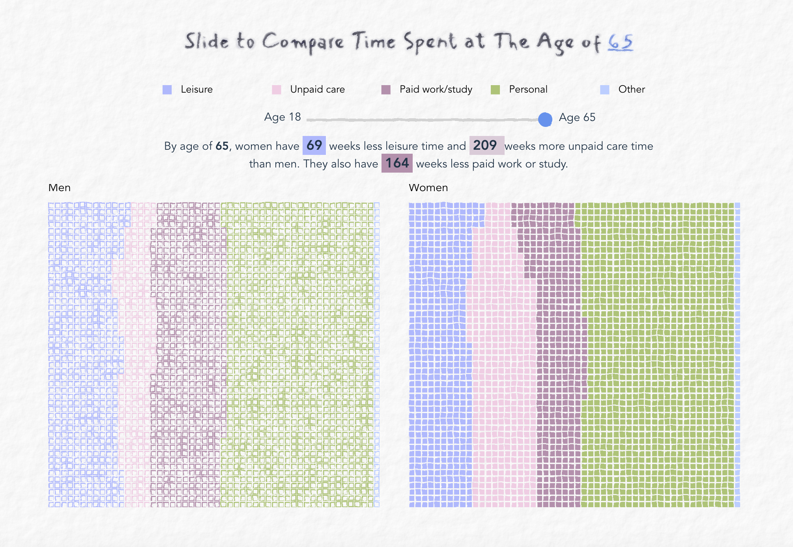
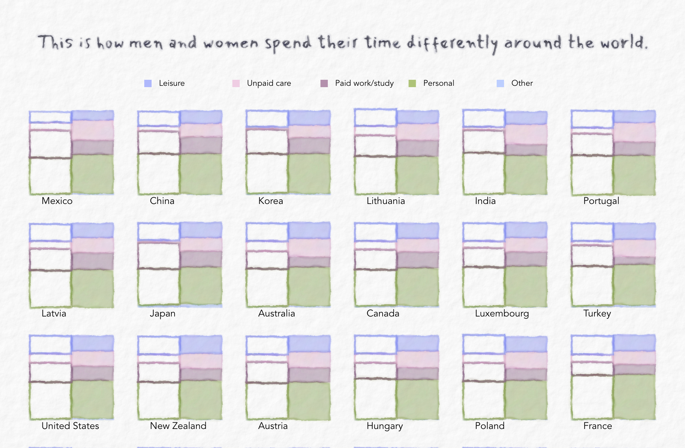

This is my final interactive project at Major Studio 1 during my study at the MS Data Visualization program at Parsons School of Design. The project is in collaboration with The Division for Sustainable Development Goals (DSDG) of the United Nations.
According to survey data gathered by OECD Gender Data in 2020, of all 33 countries surveyed, women spent less leisure time than men. This visualization takes a closer look at gender gap in time use from a life span perspective and across nations.
A key factor driving the differences in leisure time is the gender gap in unpaid work, where women are responsible for a disproportionate amount of unpaid work, particularly related to child care.

Gender gap in time use is more prominent in some countries than others. In Norway the difference was minimal, while in Portugal men reported almost 50% more leisure time than women.

Gender Gap in Time Use
Data Visualization
In this visualization, I experimented with layering low-tech hand drawn SVG filter on top of animated scrollytelling. This is also my first Svelte project, from which I learned basic concepts such as loops, value binding, tween, and props. [Github Documentation]
Tools I used
- Svelte
- SVG Filter
- d3.js
- HTML5/CSS